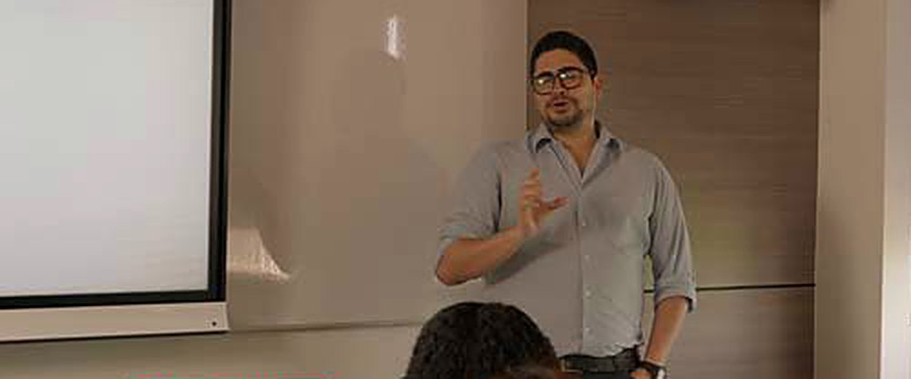
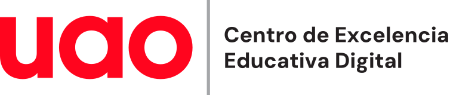
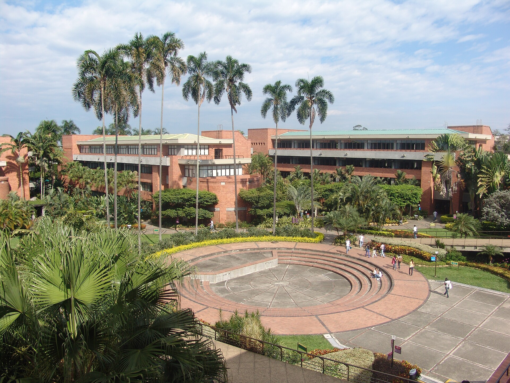
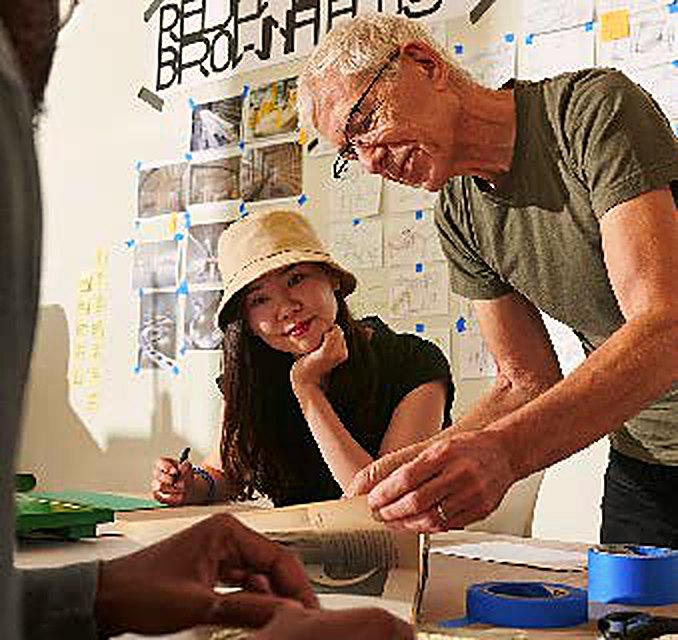
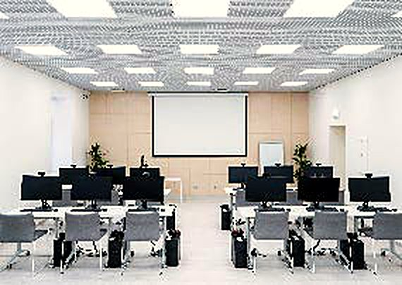
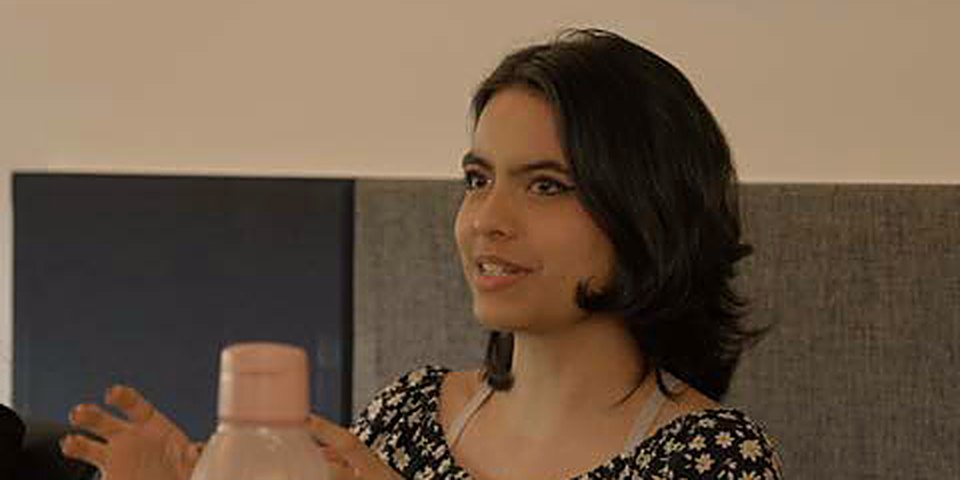
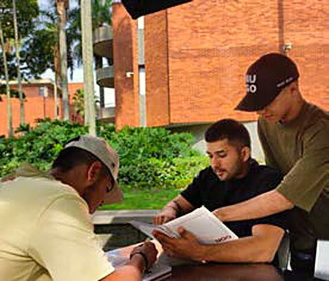
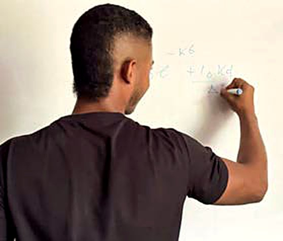
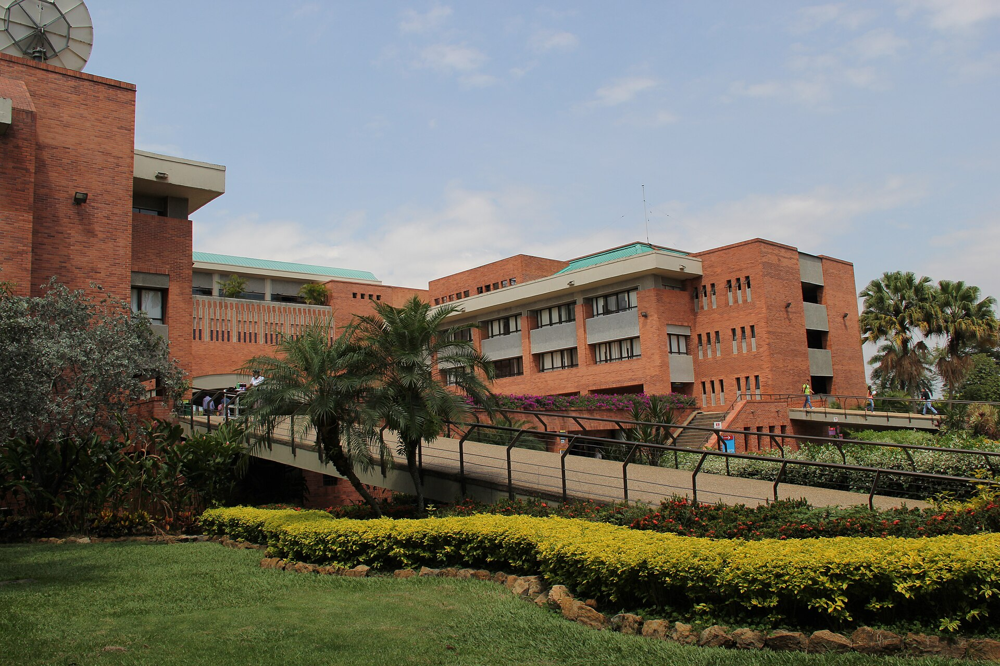

¿Quieres crear, transformar o fortalecer una experiencia de aprendizaje? Te acompañamos a estructurarla de acuerdo con tus propósitos y las necesidades de tus estudiantes.


En el CEEDi acompañamos a los profesores UAO en el diseño de experiencias de aprendizaje, la creación de recursos educativos y la apropiación de tecnologías para fortalecer sus prácticas de enseñanza.

¿Quieres crear, transformar o fortalecer una experiencia de aprendizaje? Te acompañamos a estructurarla de acuerdo con tus propósitos y las necesidades de tus estudiantes.

¿Tienes un contenido, una idea o una necesidad educativa que quieres convertir en un recurso? Te acompañamos a encontrar y desarrollar el formato más pertinente.

Explora posibilidades para incorporar tecnologías, inteligencia artificial, herramientas institucionales y nuevas prácticas digitales a tu enseñanza.

Explora guías, orientaciones, plantillas y recursos que pueden ayudarte a resolver necesidades concretas de enseñanza y aprendizaje.

Pasos y ejemplos para expresar lo que esperas que tus estudiantes aprendan.
Consultar recurso: Cómo redactar resultados de aprendizajeCoordina lo que ocurre en el salón y lo que ocurre en línea.
Consultar recurso: Plantilla para planear una sesión híbridaPreguntas para decidir cuándo la IA aporta al aprendizaje y cuándo no.
Consultar recurso: Criterios para usar IA con intención pedagógicaConoce las próximas oportunidades de formación, talleres y espacios del CEEDi para explorar nuevas posibilidades en tu práctica educativa.

19 de noviembre
26 de noviembre
Quiénes somos, qué hacemos y quiénes te acompañan en la Universidad.
Cuéntanos qué quieres lograr. Te ayudamos a identificar el acompañamiento que necesitas y a encontrar la ruta más adecuada dentro del CEEDi.